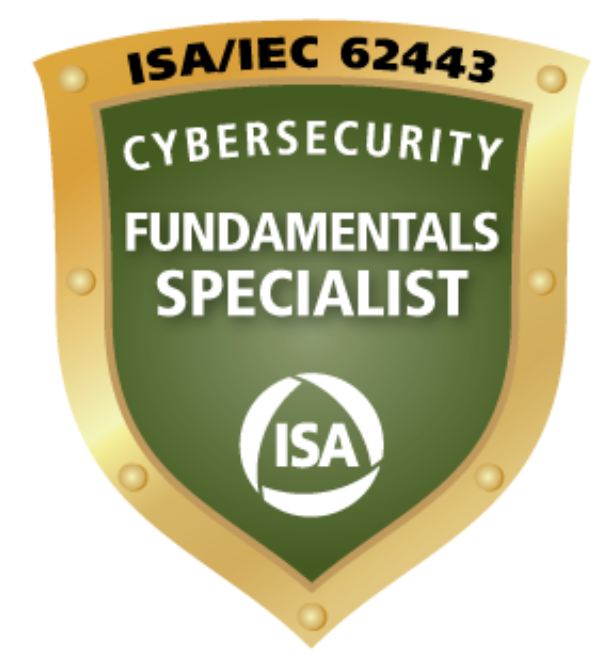

IEC 62443 Quiz
Test your knowledge of IEC 62443 standards!
Choose a mode to begin:
Practice Mode (Infinite)
Exam Mode (50 Questions, 2 Hours)
Listen Mode
IEC 62443 Quiz
Test your knowledge of IEC 62443 standards!
Submit Answer
Next Question
Abort
Question
0
of
0
| Score:
0
Quiz Completed!
Your final score is:
/
Restart Quiz